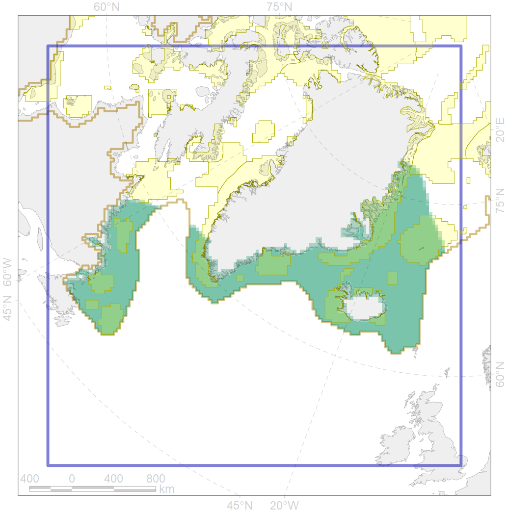
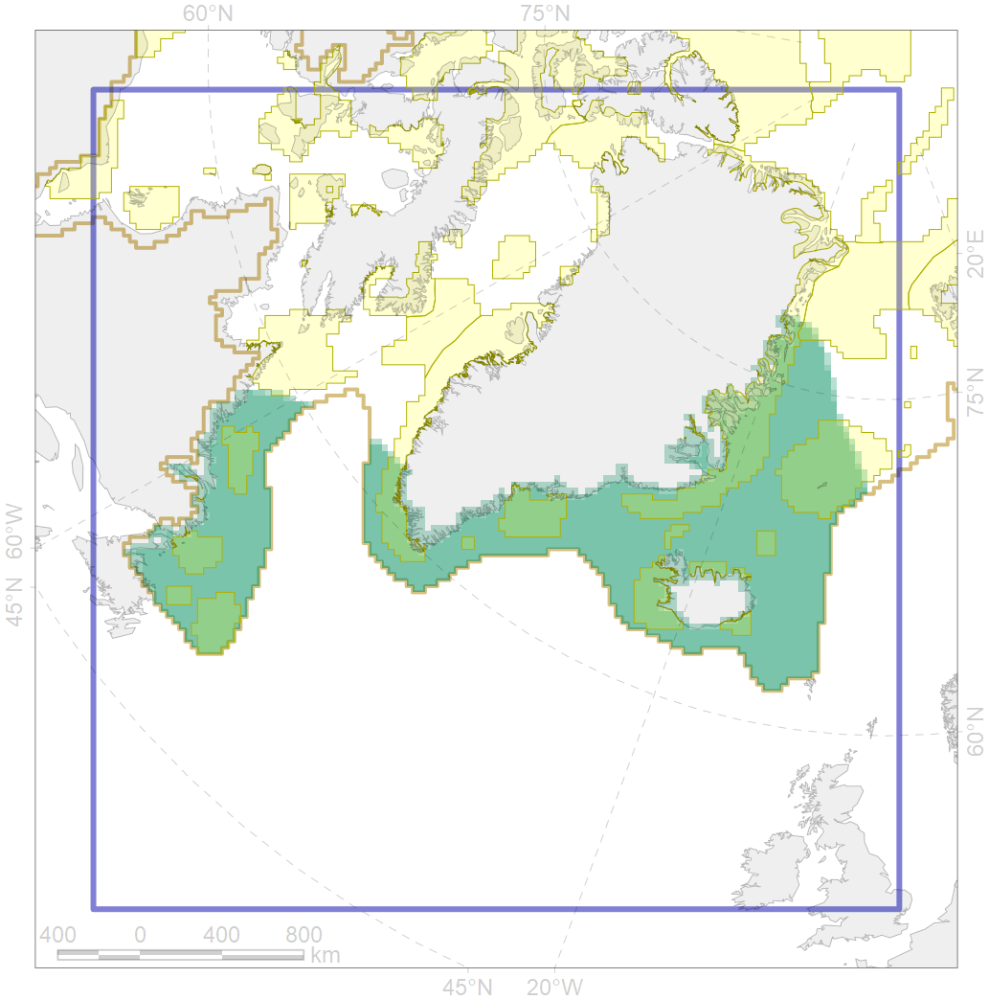

6076
 

| CF code | 6076 |
| CF name | Common murre (Uria aalge aalge) wintering grounds |
| Time Period | 2016 |
| Source(s) | Gaston & Hipfner 2000, http://seatrack.seapop.no/map |
| Seasonality | November-March |
| Depth Horizon | >0 m |
| Methodology | Field Data |
| Use Restrictions | Open source |
| Author Name | Gavrilo, Tertitski |
| Notes | |
| Scenario’s Target | 0.18 |
| Target Achievement | 0.336 (Scenario: 186.9%) |
| PAC | Share of the Total Amount within the PAC | Share of the Target Achievement for the ArcNet | PAC’s Contribution to the Target Achievement |
|---|---|---|---|
| 29 | 0.2%0.3% | 1.0%1.5% | 0.5%0.8% |
| 32 | 8.1%8.4% | 40.5%41.8% | 21.7%22.3% |
| 34 | 6.6%6.9% | 33.6%33.9% | 18.0%18.1% |
| 36 | 0.5%0.6% | 2.3%2.4% | 1.2%1.3% |
| 37 | 0.4%0.5% | 1.0%1.2% | 0.6%0.6% |
| 38 | 2.4%2.6% | 11.6%12.3% | 6.2%6.6% |
| 39 | 0.5%0.5% | 2.3%2.5% | 1.2%1.4% |
| 40 | 0.1%0.1% | 0.3%0.5% | 0.2%0.3% |
| 41 | 0.4%0.5% | 1.4%1.6% | 0.8%0.9% |
| 42 | 2.9%3.0% | 14.6%14.6% | 7.8%7.8% |
| 43 | 0.2% | 0.9% | 0.5% |
| 44 | 2.6%2.7% | 12.7%13.0% | 6.8%7.0% |
| 76 | 0.0%0.0% | 0.0%0.0% | 0.0%0.0% |
| 77 | 2.0% | 10.0% | 5.3% |
| 78 | 0.0%0.0% | 0.0%0.1% | 0.0%0.1% |
| 79 | 1.8%2.0% | 8.4%8.4% | 4.5%4.5% |
| 80 | 0.5%0.7% | 2.5%2.8% | 1.3%1.5% |
| 81 | 2.7%2.8% | 13.4%13.5% | 7.2%7.2% |
| inner | 32.1%33.6% | 156.6%161.0% | 83.8%86.2% |
| outer | 65.6%68.9% | 30.2%41.7% | 16.2%22.3% |
| † supplement values are for area consistence whereas principal values are for Accenter compatible gridded stats |